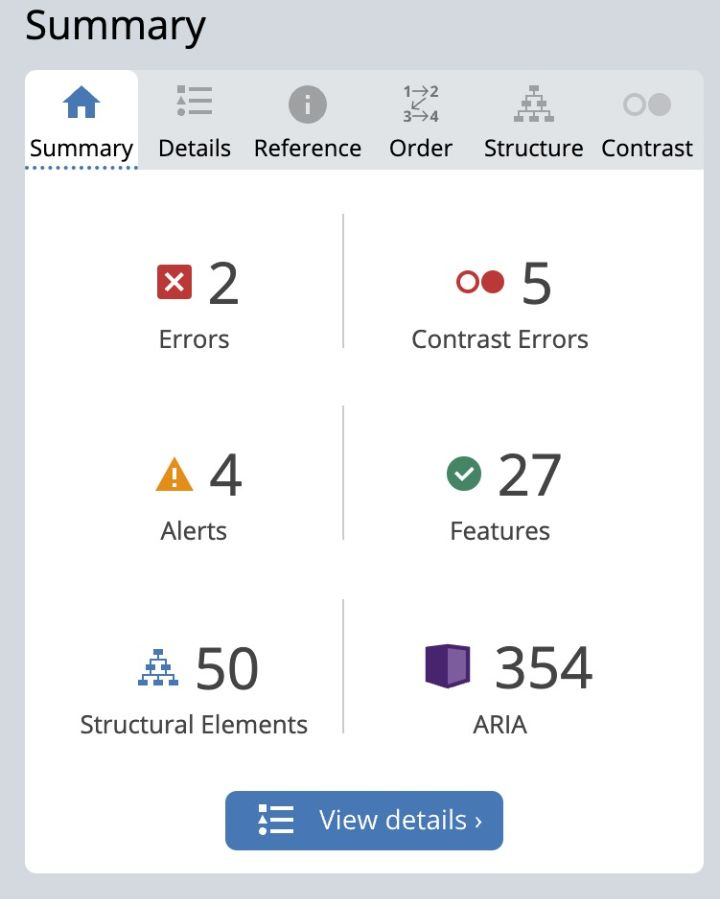
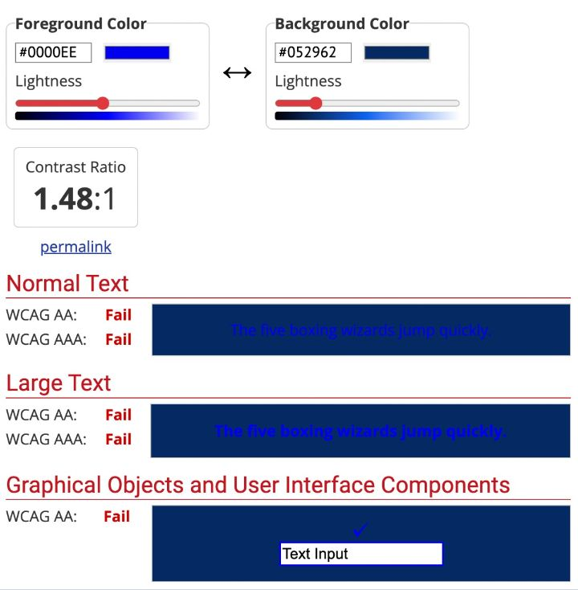
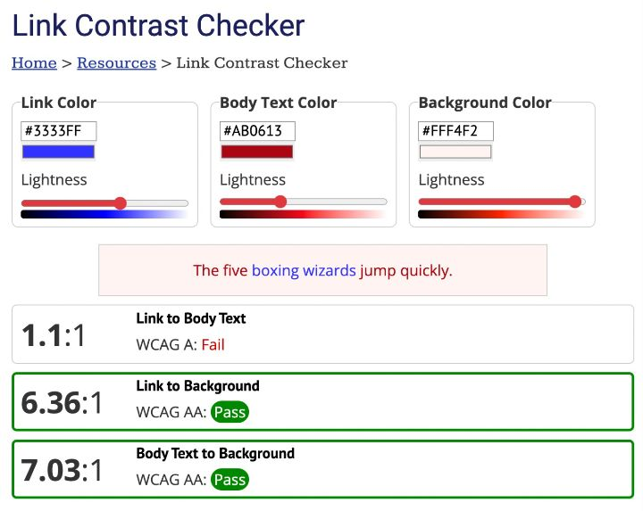
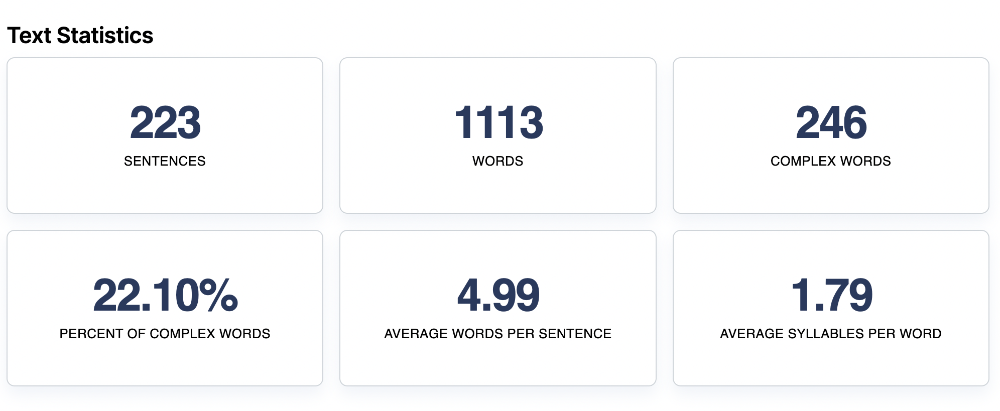

Week 10 Tasks
Task 1: Evaluate websites against accessibility standards
The website I have chosen to evaluate is a news article (Social networks struggle to crack down on ‘incel’ movement).which correlates with my subject matter.
The first tool I have assessed is WAVE (Web Accessibility Evaluation Tool), this is a web-based tool which is to support creators in the task of creating accessible content which doesn’t produce obstructions for users with disabilities. Below is the data I have uncovered in association with my website of choice:
WebAIM Contrast Checker is the second web tool which provide insight into the colour choices for website design. This is done so through using the colour hex or RGB codes. The contrast ratio for this website is 1.33:1, this is classified as a failure by the website’s metrics.
Another service this website provides is the ability to check links, backgrounds, and text for distinction within the colour choices. However, the website did pass in regard to these specific indicators:
Finally, the Readability Test Tool issues a score on behalf of furthermost expended readability indicators. My website of choice was awarded a score of 50.6 (out of 100) in relation to readability, this means the text is intermediate as the higher a score the easier it is to understand whilst a lower score insinuates a further complex text.

Find below the text statistics derived from my chosen website:
Task 2: Record your evaluation and reflect on your own practice
As seen above is my evaluation of my chosen website and how it has succeeded in aggregation with these accessibility tools.
In the discussion of my own website, I have tried to integrate the notion of accessibility into my own design process as much as possible when making my decisions. So far, I have done this through using clear and uncomplicated fonts in order to keep my data comprehensible. Along with this the decision to keep my use language consistent and straightforward was a central focus of design process. Colour options have been my main endeavour throughout this project, I have trialled numerous different colour schemes so far in hopes of finding something that fits with my subject matter. Using colours which remain out with stereotypical choices in relation to gender (pink and blue) is something I have been dedicated to avoiding due to my subject matter relying heavily on this topic. Overall, I feel confident in. my abilities to deliver a website which is accessible for all users in relation to colour, font, imagery, language and construction.